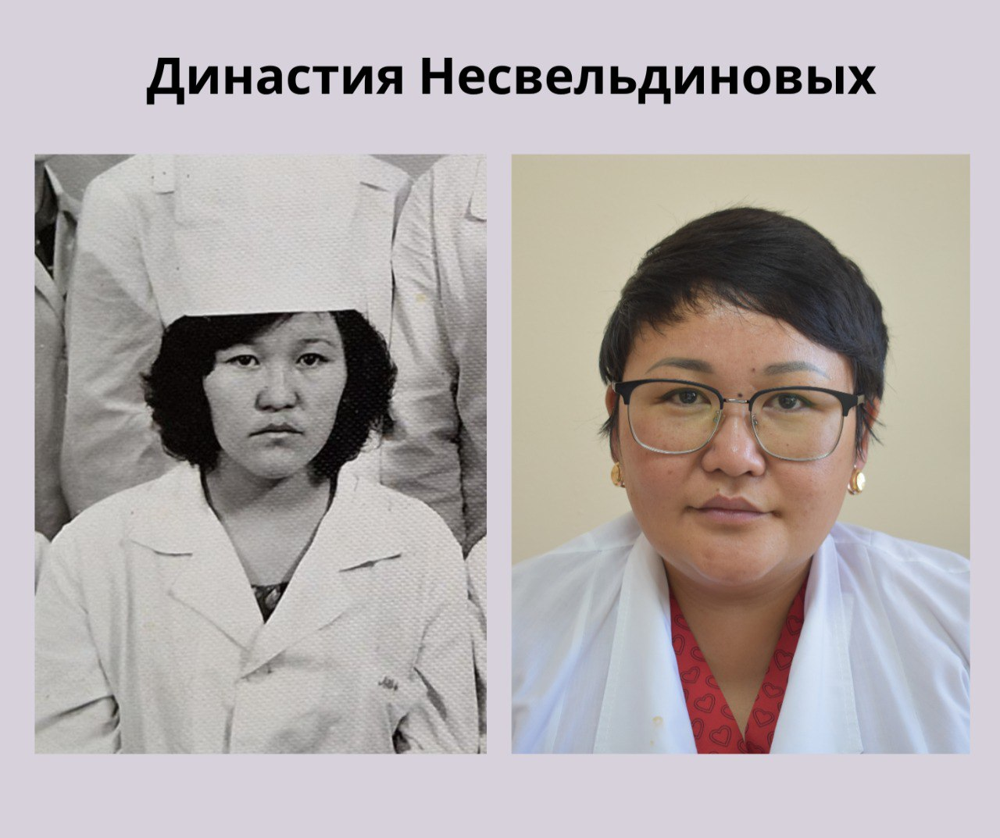

16 сентября 2024
Ученик превосходит учителя, а каждое новое поколение в чем-то превосходит предыдущее… Именно в этом и заключается прогресс, и в даже в некоторой степени эволюция рода человеческого.
У Альмиры Несвельдиновой, врача фтизиатра группы МиО центра фтизиопульмонологии ВКО с самого рождения был прекрасный образец медицинского работника. Её мама Гульжиян Ахметжановна долгие годы проработала в детской больнице Жанасемейского района, а затем старшей медицинской сестрой Врачебной амбулатории.
Быть как мама, нужной и полезной, врачевать людей – вот о чем мечтала всегда наша коллега.
В 2003 году после окончания медицинской академии г. Семей, Альмира Мураткановна по распределению уезжает в Северный Казахстан. Именно там она сделает свои первые шаги в профессии будучи сельским терапевтом. Затем в Шемонаихе терапевтом в санчасти колонии. И только после этого вернется в родной город семейным врачом и с 2007 года она крепко связывает свою профессиональную деятельность с фтизиатрией, в региональном противотуберкулезном диспансере Семея.
И вот уже 4 года как Альмира Мураткановна вошла в наш коллектив. Здесь ее любят и уважают не только потому что она профессионал своего дела, но и за ее искрометный юмор, который помогает в самые сложные минуты и в самые радостные моменты.
В этом году профессиональный стаж Альмиры Несвельдиновой насчитывает ровно 21 год, что в переводе в человеческий возраст означает полное совершеннолетие. Она работает не только в нашем центре фтизиопульмонологии, но и ведет прием в центре семейного здоровья Авиценна в качестве врача фтизиатра.
За эти годы она с большой благодарностью вспоминает своих преподавателей в медакадемии и своих наставников, старших товарищей, которые дали ей самые ценные знания и наставления.
Ты не можешь быть наполовину врачом, а значит ты должен и обязан полностью отдаваться своей профессии, слышать и слушать пациента – главный урок, который она вынесла и с которым живет Несвельдинова Альмира Мураткановна.
#шқофпо #вкофпц #ШҚОфтизиопульмонологиялықорталығы #вкофтизиопульмонологическийцентр #вко #династия #династияврачей #люблюсвоюпрофессию #призвание #врачебнаядинастия